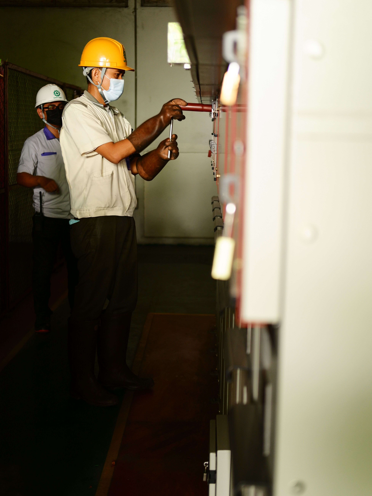

Gestión y Control de Calidad
Concepto de Calidad
La calidad se refiere al grado en que un producto cumple con las especificaciones técnicas exigidas y satisface las expectativas del cliente. El control de calidad consiste en los mecanismos, acciones y herramientas utilizadas para detectar la presencia de errores y asegurar este cumplimiento.
Inspección, Prevención y Mejora Continua
- Inspección: Revisar el producto final para separar lo bueno de lo defectuoso.
- Prevención de defectos: Diseñar el proceso de forma que sea imposible (o muy difícil) cometer un error, actuando antes de que ocurra.
- Mejora continua: Filosofía de evaluar constantemente los procesos para optimizarlos paso a paso, reduciendo la variabilidad en los resultados.
Herramientas de diagnóstico
El Diagrama de Pareto ayuda a identificar el 20% de las causas que generan el 80% de los defectos, priorizando qué resolver primero. El Diagrama de Ishikawa (Espina de Pescado) permite rastrear la causa raíz de un problema analizando método, máquina, mano de obra, materiales, medida y medio ambiente. Las listas de verificación (Checklists) garantizan que se cumplan todos los pasos operativos sin omitir controles importantes.
Ejemplos de defectos industriales en plásticos
- Rebabas: Exceso de material en los bordes por un mal cierre del molde.
- Deformación: Piezas torcidas por un enfriamiento irregular o expulsión prematura.
- Manchas o ráfagas: Impurezas o humedad en la resina fundida.

Herramientas de Calidad
| Herramienta | Función | Ejemplo |
|---|---|---|
| Diagrama de Pareto | Priorizar los defectos más recurrentes. | Descubrir que las rebabas causan el 70% de los rechazos. |
| Diagrama de Ishikawa | Identificar causas raíz de un defecto. | Analizar por qué las piezas salen deformadas (temperatura, resina, operador). |
| Listas de verificación | Asegurar el cumplimiento de estándares. | Checklist de limpieza del molde antes de iniciar producción. |